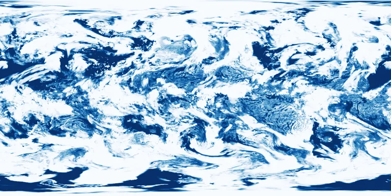

Benchmark / Near-lossless / era5-tcc-1h / era5-tcc-1h-09
era5-tcc-1h-09
2023-11-26 · sample details

Metadata
| id | era5-tcc-1h-09 |
|---|---|
| source | ERA5 hourly data on single levels, Copernicus Climate Data Store, GRIB |
| asset | reanalysis-era5-single-levels?variable=total_cloud_cover&date=2023-11-26&time=00:00/23:00&format=grib |
| crs | EPSG:4326 |
| transform | -0.125 0.25 0.0 90.125 0.0 -0.25 |
| datetime_start | 2023-11-26T00:00:00Z |
| datetime_end | 2023-11-26T23:00:00Z |
| bands | tcc@00:00 to tcc@23:00, 24 planes |
| shape | 24x721x1440 |
| dtype | uint16 |
| unit | fraction (0-1) |
| scale |
|
| offset |
|
| input_sha256 | e8d06ee2e21b3b1f8a8f7cb3dd95764146804c9c3d9045e9af4721f9ce31007a |
| variable | total_cloud_cover |
| grib_short_name | tcc |
| bits_per_value | 16 |